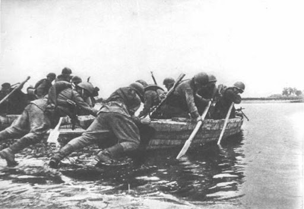

Polacy na frontach II wojny światowej
Wojna na Zachodzie
a) Rola Polaków w wojnie na Zachodzie, zwłaszcza w bitwie o Anglię i armii gen. Władysława Andersa
Polacy odegrali kluczową rolę w działaniach wojennych na Zachodzie, walcząc u boku aliantów w różnych teatrach działań wojennych.
- Bitwa o Anglię (1940): Polscy lotnicy z dywizjonów myśliwskich 302 i 303 stali się bohaterami bitwy o Anglię, która była kluczowa dla obrony Wielkiej Brytanii przed niemiecką inwazją. Dywizjon 303 osiągnął najwyższą skuteczność wśród wszystkich alianckich jednostek myśliwskich.
- Armia gen. Władysława Andersa: Po uwolnieniu z obozów w ZSRR, polscy żołnierze pod dowództwem gen. Andersa zostali ewakuowani do Iranu, a następnie walczyli na froncie włoskim. Wzięli udział w zwycięskiej bitwie o Monte Cassino (1944), otwierając drogę aliantom na Rzym.
b) W jaki sposób Polacy przyczynili się do wyzwolenia Europy Zachodniej?
Polacy walczyli na wielu frontach, od Normandii po Belgię i Holandię, przyczyniając się do zwycięstwa aliantów:
- 1 Dywizja Pancerna gen. Stanisława Maczka uczestniczyła w wyzwoleniu Francji, Belgii i Holandii, zdobywając sławę jako niezawodna jednostka pancerna.
- Samodzielna Brygada Spadochronowa gen. Sosabowskiego walczyła w operacji „Market Garden” w Holandii (1944), pokazując wielkie poświęcenie podczas walk o Arnhem.
Wojna na Wschodzie
a) Działania Polaków na froncie wschodnim, szczególnie udział Polaków w walkach na terenie ZSRR Po podpisaniu układu Sikorski-Majski w 1941 roku część Polaków uwolniono z sowieckich obozów. Powstały dwie główne formacje wojskowe: - Armia Andersa – Ewakuowana z ZSRR i walcząca na Zachodzie. - 1 Armia Wojska Polskiego – Utworzona w ZSRR pod dowództwem gen. Zygmunta Berlinga, uczestniczyła w wyzwalaniu Polski, m.in. w bitwie pod Lenino (1943) i w walkach o Warszawę (1944).
b) Skutki polityczne decyzji ZSRR o współpracy z Polską po 1941 roku
Decyzja ZSRR o współpracy z Polakami miała głównie polityczne skutki:
- Podwójna gra ZSRR: Stalin zgodził się na utworzenie polskich jednostek wojskowych, ale jednocześnie dążył do uzyskania kontroli nad Polską.
- Podział polskiej sceny politycznej: Powstanie polskiego rządu w Lublinie (tzw. Rząd Tymczasowy) w 1944 roku, kontrolowanego przez ZSRR, doprowadziło do konfliktu z legalnym rządem RP na uchodźstwie.
- Zmiana granic: Decyzje Stalina, zaakceptowane przez aliantów w Teheranie i Jałcie, przesunęły granice Polski na zachód, co miało dalekosiężne skutki dla społeczeństwa i polityki kraju.